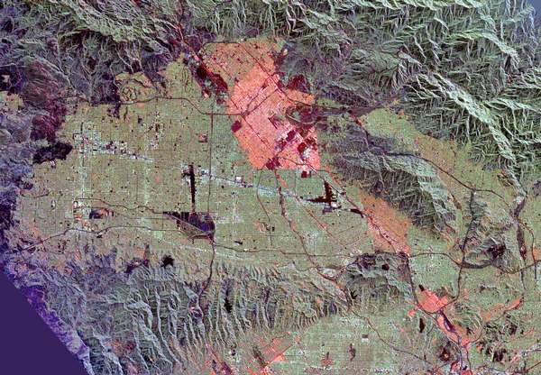
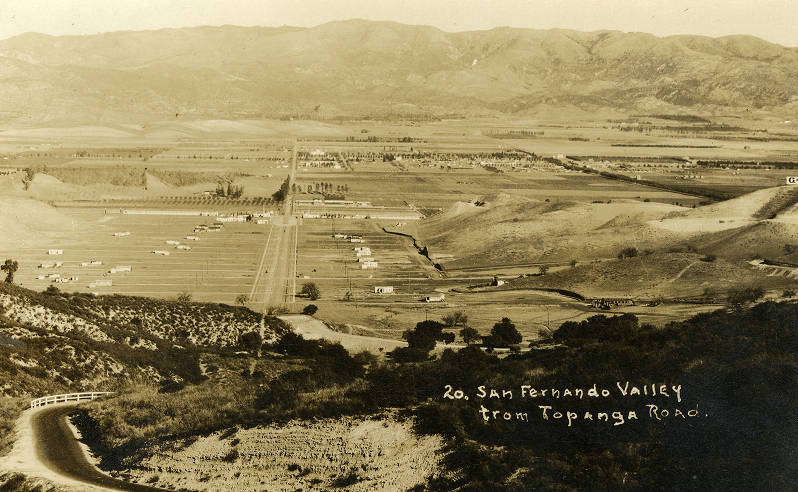
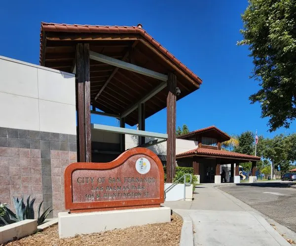

Home
San Fernando Valley
San Fernando Valley
The San Fernando Valley is one of the hottest regions in Los Angeles, shaped by its inland geography,
low tree canopy, and expansive paved surfaces. Neighborhoods like Pacoima, North Hollywood, and
Sun Valley experience some of the most extreme heat in the county, with temperatures regularly
7–15°F higher than coastal areas. Decades of uneven infrastructure investment, limited shade, and
high transit dependence make the Valley especially vulnerable to intensifying heat and climate change.

Overview — San Fernando Valley
Average Los Angeles High Temperature:
• August (Hottest Month): 85° F
• December (Coldest Month): 67° F
Heat Island Index: +7°F warmer than coastal LA
Population: ~1.8 million residents
Racial/Ethnic Composition:
• ~43% Latinx
• ~37% White
• ~11% Asian
• ~4% Black
Heat Vulnerability Indicators:
• High rates of cardiovascular and respiratory conditions

Heat Inequity Indicators
Tree Canopy Coverage: ~14–16% (County avg ~18%)
Median Household Income: ~$72,000
LA County Median Household Income: ~$88,000
Below 100% Poverty Threshold: 14%
Heat Exposure:
• Average Energy Burden: 1.8% of income
• Car dependent in most areas
• Bus and metro riders can be exposed to heat on long waits

Historical Trends — San Fernando Valley
Temperature Change:
• +4°F rise since 1950
Urban Development:
• Rapid postwar industrial and residential growth
• Increased infrastructure construction
• Nighttime warming intensified by dense urban development
Demographic Change:
• 1950s–1970s white suburbanization boom
• Post-1980: large Latinx & immigrant communities
• Current gentrification pressures
Modern Disparity:
• Policies historically neglected tree canopy & shade without public pressure

Solutions & Interventions
Green Infrastructure:
• LADOT “Cool Pavement” pilots in Canoga Park & North Hollywood
• Shade structures added to Metro stops
Community Solutions:
• Pacoima Beautiful: local activism
• Youth climate programs
Government Policies:
• LA’s Heat Action Plan prioritizes SFV

Resources & Links — San Fernando Valley
Emergency & Safety:
• LA County Cooling Centers
• Heat Illness Prevention Guide (Cal/OSHA)
Environmental Justice Organizations:
• Local tree-planting and heat advocacy groups
• Pacoima Beautiful
Data Sources:
• LA GeoHub temperature & canopy datasets
• Neighborhood Data for Social Change